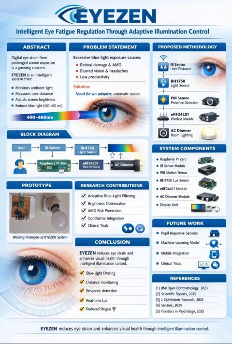
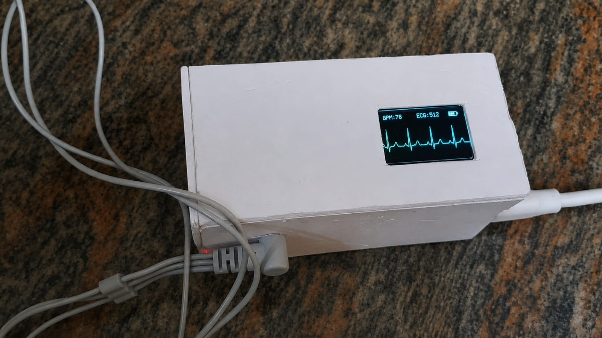
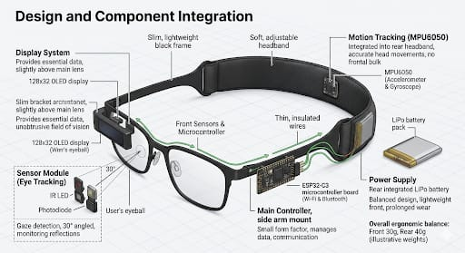
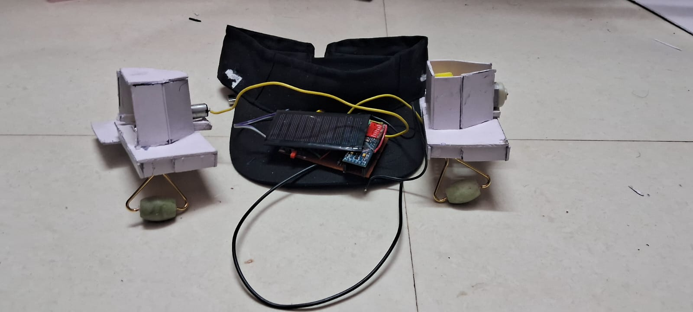
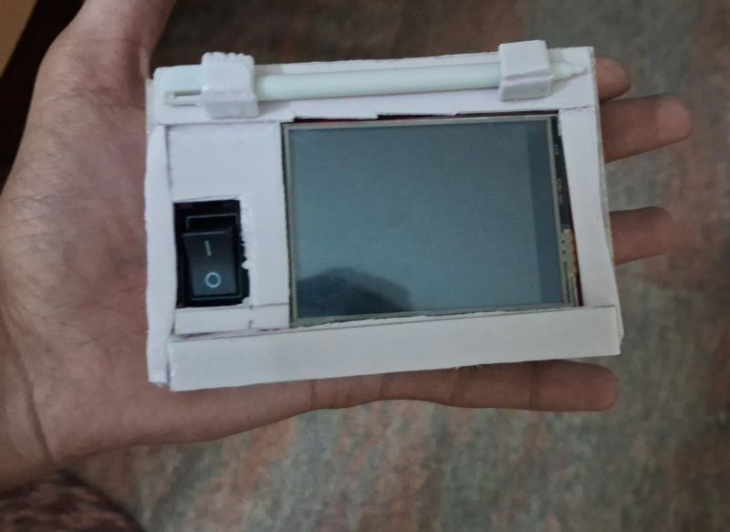
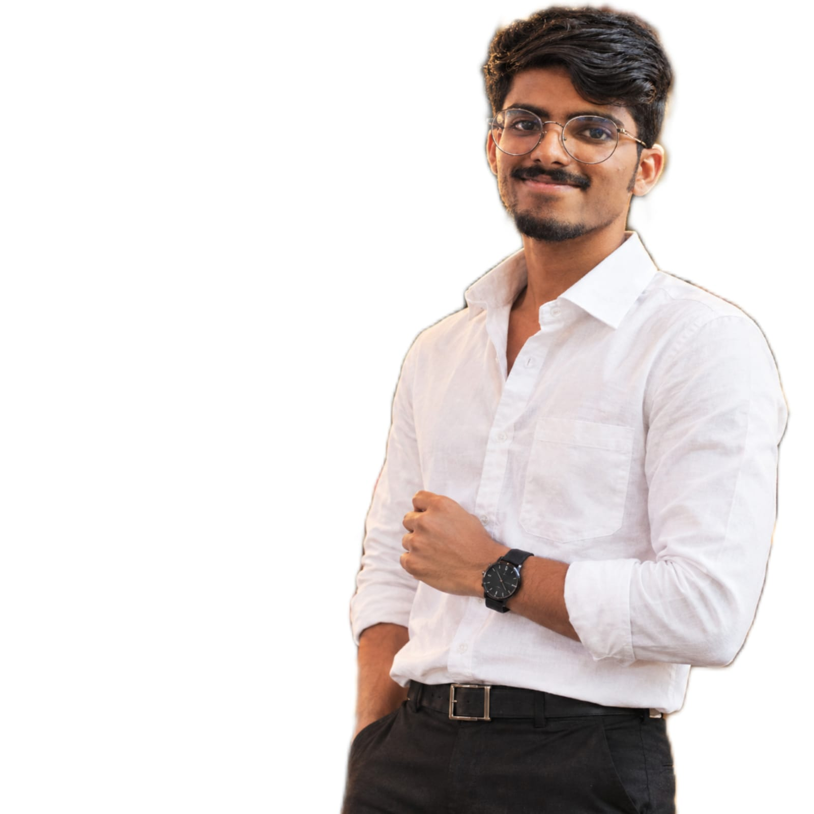
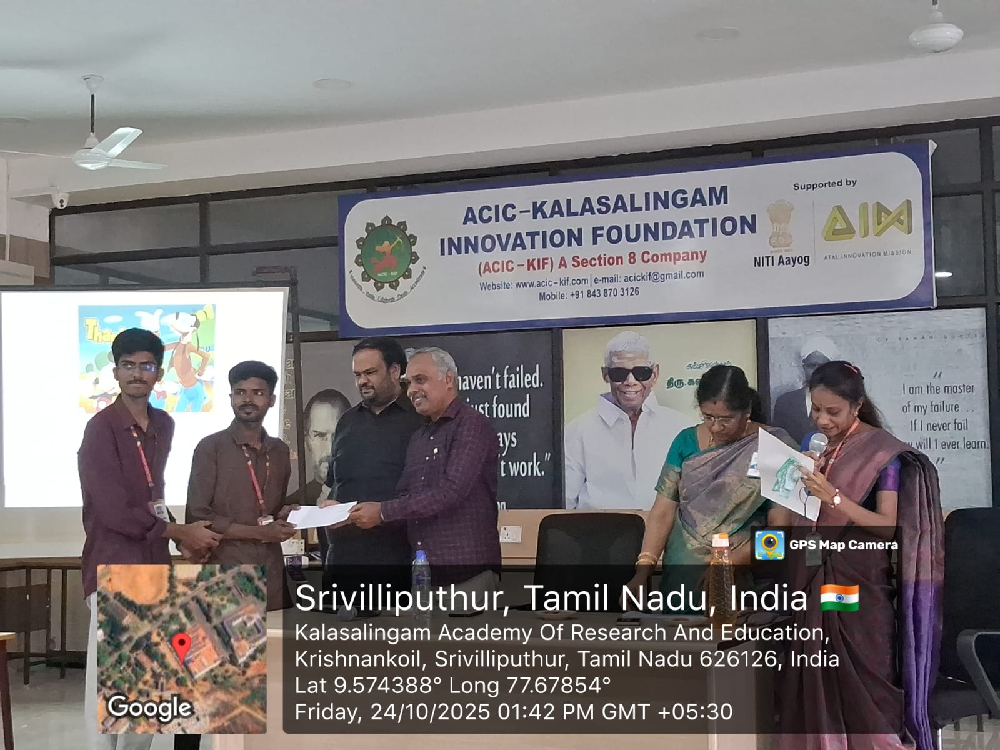
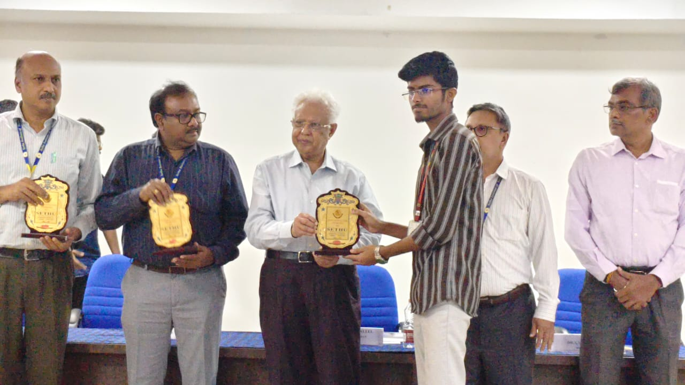
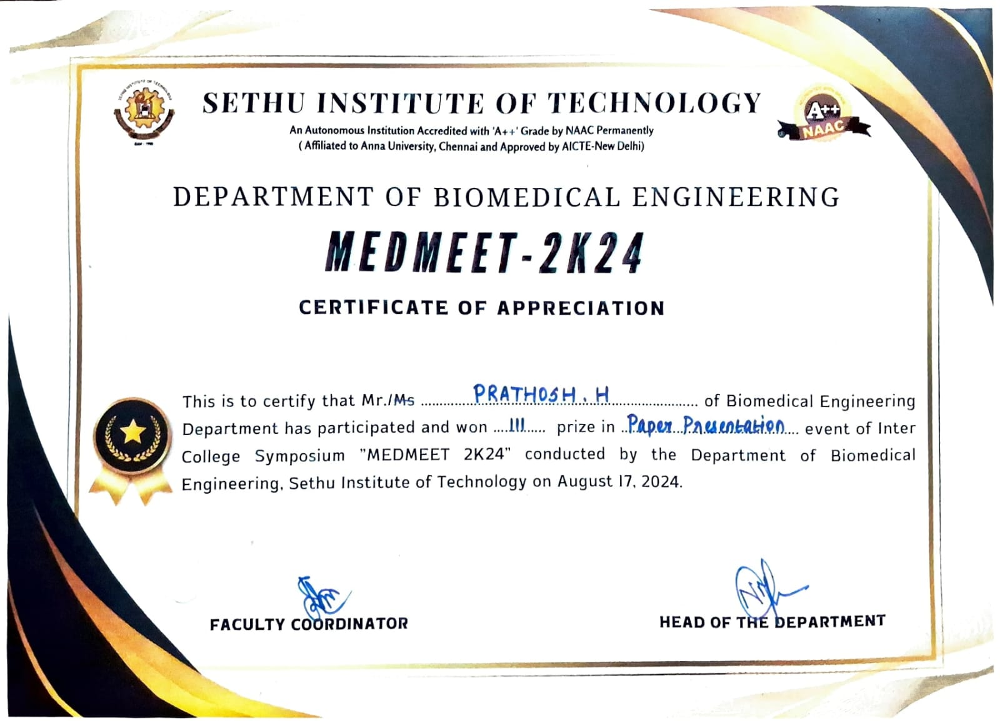
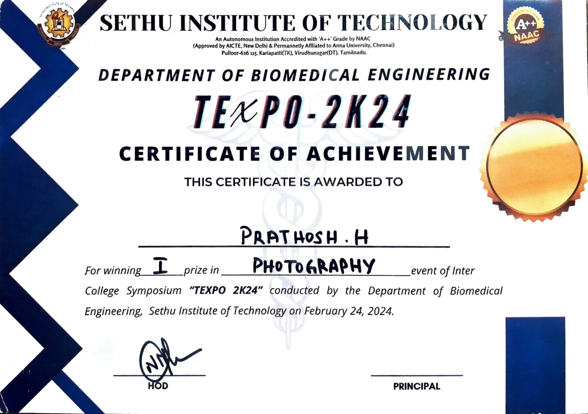

Pre-final year Biomedical Engineering student exploring Healthcare AI, Machine Learning, Computer Vision, embedded systems and practical MedTech innovation.

I am a pre-final year Biomedical Engineering student with a strong interest in healthcare technology, machine learning, computer vision and medical-device innovation. I enjoy turning real healthcare problems into practical solutions using biomedical instrumentation, embedded systems, AI and human-centered design.
My current work spans eye-care innovation, biomedical signal monitoring, wearable concepts and healthcare-focused AI. I am actively looking for opportunities where I can learn, build and contribute to meaningful healthcare technology.
A growing collection of biomedical, embedded and intelligent-system projects.
Intelligent Eye Fatigue Regulation Through Adaptive Illumination Control — a smart lighting concept designed to reduce eye-strain in study and work environments.
Portable IoT-based ECG monitoring using ESP32-C3, AD8232 and OLED display with local waveform viewing and network access.
Spectacle-like wearable concept exploring optical sensing and motion-aware monitoring for eye-health applications.
A biomedical therapeutic-device project focused on a practical approach to TMJ pain relief and user comfort.
Rule-based healthcare assistant built with Arduino, TFT display and SD storage for structured interactive responses.
Hospital-based biomedical exposure in Madurai, building familiarity with clinical environments, equipment and healthcare workflows.
Clinical environment exposure with a focus on biomedical equipment and hospital technology.
Team MEDINTEL — developing EYEZEN with a focus on eye-care, adaptive illumination and practical engineering.
Shortlisted for IVP and presented the innovation journey through the EDII-TN ecosystem.

Recognition for project innovation and presentation.

Recognized for achievement at the Shining Star event.

Academic presentation achievement.

A creative achievement beyond engineering.